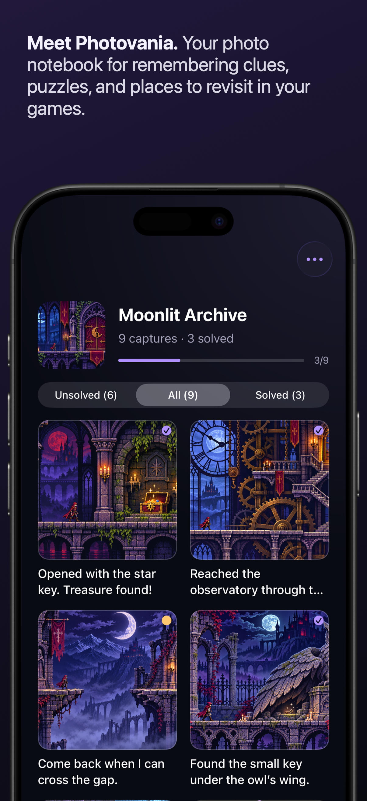
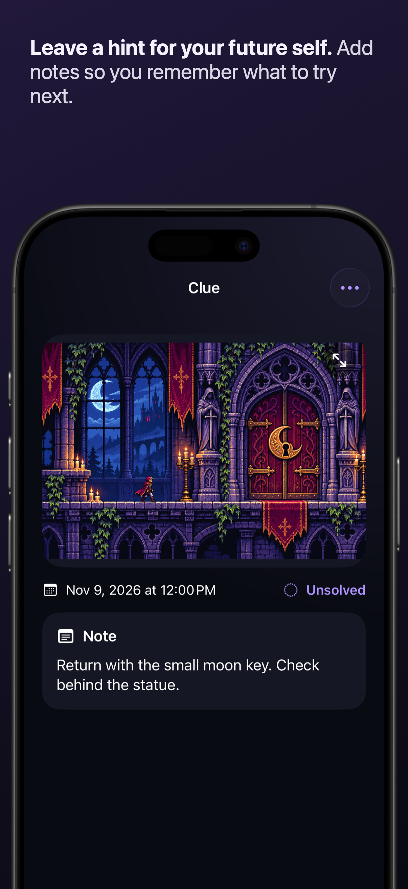
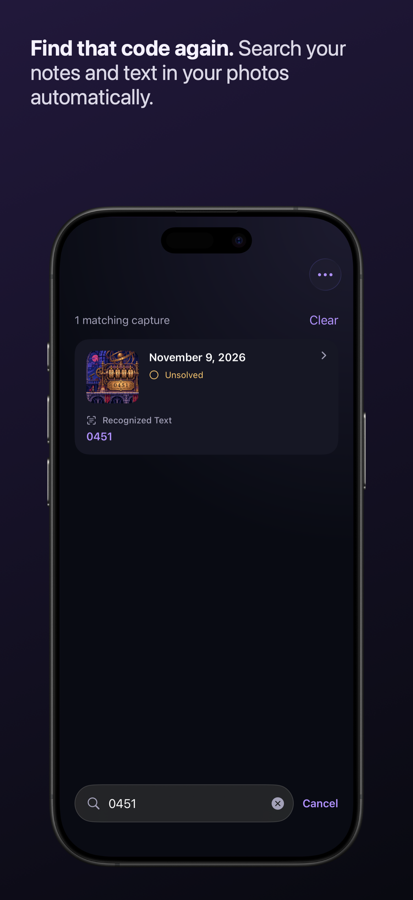

01 / COLLECTA place for every clue.
Take a photo or import a screenshot. Keep maps, puzzles, and discoveries organized by game.
PHOTOVANIA · IPHONE & IPAD
Take a photo. Leave yourself a hint. Remember where the adventure left off.
Coming to the App Store
01 / COLLECTTake a photo or import a screenshot. Keep maps, puzzles, and discoveries organized by game.

02 / REMEMBERWrite down what you tried and what to do next. Mark clues solved as you explore.

03 / FINDSearch your notes and text in your photos. Text recognition runs right on your device.
No account required. Your photos, notes, and recognized text are stored locally. Capture, notes, and search work offline.
Downloading artwork from a web address needs an internet connection. Screenshots use fictional game imagery to illustrate the app.
Read the privacy policy ↗Find answers or get in touch directly.
Photovania support ↗